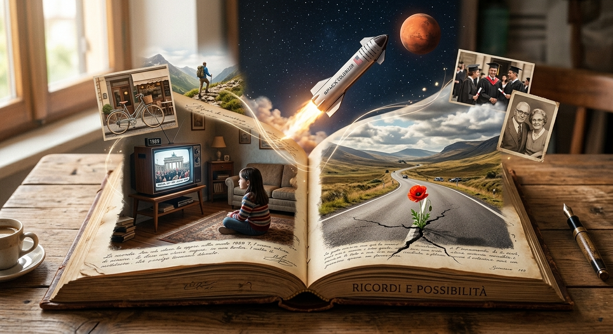

Entre bastidores de «Sogni, comunisti e altri disastri» («Sueños, comunistas y otros desastres»): una entrevista con la autora
¿De dónde nace Lidia? ¿Cuánto hay de la autora en la niña protagonista? ¿Y por qué, junto a los recuerdos de la infancia, aparecen en el libro sueños y vidas alternativas? Hablamos de ello con la autora.
P. Empecemos por la pregunta obvia: ¿hasta qué punto es autobiográfico «Dreams, Communists and Other Disasters»?
R. ¡Obviamente, mucho!
P. Entonces, ¿esa niña eres tú?
R. Sí. Incluidos los defectos y la insoportable tendencia a cuestionarlo todo, a cabrearme y a decir palabrotas. He querido mostrar la verdad, por una vez: estamos siempre tan rodeados de historias edulcoradas, con personajes que tienen que caer bien a toda costa…
P. Entonces, ¿la protagonista, Lidia, es una niña antipática?
R. Espero que no. Pero al menos es real.
P. ¿También los demás personajes son reales?
R. Casi. Están basados en experiencias reales, pero cada uno de los personajes es, en realidad, una mezcla de personas reales. Por ejemplo, el antagonista es la suma de tres niños que me insultaban porque venía de una familia comunista, aunque habla como uno de mis compañeros de clase en particular. Los amiguitos resumen las amistades de mi infancia, pero no son retratos de individuos concretos. Más bien representan al amigo fiel que razona de manera lógica, a la amiga emocional pero tendencialmente pragmática, al amigo con el que siempre se discute de forma muy acalorada, pero con el que, al final, se sigue siendo amigo…
P. Precisamente, el antagonista es interesante: insulta a la protagonista por su origen familiar y político, pero luego lucha junto a ella cuando percibe una injusticia hacia otra niña de su grupo…
R. Claro, porque eso es lo que pasaba realmente. Los niños a menudo repiten lo que oyen decir a los adultos de referencia, pero, por debajo de eso, tienen su propia personalidad, y cuando sale a la luz se nota. Mauro venía de una familia en la que los comunistas eran malos por definición, y a Lidia le molesta que él no entienda cuestiones que para ella son el pan de cada día, como el debate sobre la justicia social; y, sin embargo, de alguna manera, son amigos.
P. Desde luego, los años ochenta, en tu caso, fueron interesantes.
R. Creo que lo fueron para todo el mundo. Mi historia solo muestra cómo los vio una niña que tenía un punto de vista quizá un poco particular.
P. En la segunda parte del libro la historia se vuelve más onírica, más fantástica.
R. Sí, los otros relatos están basados en sueños que he tenido (de ahí el título del libro), obviamente reelaborados… Normalmente no sueño de una manera tan detallada. Los incluí aquí porque me parecían la continuación perfecta de la historia, de la memoria: el inconsciente me dio un par de asistencias y yo las reelaboré con mi experiencia real. Por ejemplo, el último relato parte de un sueño en el que me despierto en otra ciudad y he tomado decisiones diferentes. Sin hacer spoilers, puedo decir que el resto del relato es lo que habría hecho si hubiera pasado de verdad.
P. El libro parece tener casi dos almas diferentes: en la primera parte, la realidad de la infancia; en la segunda, una versión onírica de la vida adulta. ¿Por qué este cambio en la estructura? ¿Es intencionado?
R. Sí, es intencionado. Quería mostrar mi experiencia, mi memoria de la infancia, porque me parece divertida y formativa; pero también quería mostrar mi experiencia de los años posteriores, de la vida adulta. Solo que la vida adulta está hecha a menudo de promesas incumplidas, de oportunidades que no llegaron o de injusticias. Así que, en lugar de mostrar el resentimiento, la amargura que provocan estas cosas, quise contarlas mostrando el otro lado: la parte divertida que todavía podemos tener en la vida adulta, que consiste en no dejar de imaginar nuestra vida, lo que querríamos o no querríamos hacer.
P. Entonces, en el fondo, tienen razón los que dicen que estás enfadada. Existencialmente hablando, quiero decir.
R. ¿Quién no lo estaría? Perdí demasiado pronto a mis padres y, con ellos, un enorme punto de referencia, unas personas valiosas y de gran talla humana. Me inventé una editorial y una página web para seguir dialogando con ellos y con su historia, para darlos a conocer también a otras personas.
P. La rabia, o el resentimiento, no parecen proceder únicamente de esto, sino también de la vida profesional, o de las decisiones profesionales.
R. De nuevo, ¿quién no estaría cabreado? Uno estudia, se esfuerza, obtiene un título universitario, intenta integrarse bien en un mundo laboral competitivo… y después el trabajo no existe, o no es estable, o exige compromisos que no son aceptables. Me parece normal que uno se pregunte si hizo bien o no en tomar ciertas decisiones. Solo que yo intento planteármelo con un poquito de autoironía. Y espero que otros puedan reconocerse en esta historia: quiero decir, muchos quizá se han preguntado qué habría pasado si hubieran tomado otras decisiones.
P. Pero quizá no muchos hayan tenido de pequeños padres comunistas, un abuelo que intentaba salvarlos de los comunistas y una manera tan implacable de mirar a los adultos.
R. Bueno, implacable me parece una palabra un poco fuerte; digamos que era bastante crítica desde pequeña. En cualquier caso, es verdad que mis padres tenían un estilo de vida que impregnó toda mi experiencia.
P. ¿Fueron unos padres, en cierto sentido, «pesados», o al menos exigentes? Me parece percibir que Lidia creció en un contexto en el que las expectativas eran bastante altas: ¿habrían aceptado esos padres a una hija menos brillante, menos politizada, menos comprometida intelectualmente?
R. Sí, mis padres fueron unos padres «pesados» y exigentes: me ofrecieron una vida llena de estímulos y de personas interesantes, pero también una herencia interior un poco difícil, si queremos llamarla así. Y sí, creo que habrían aceptado perfectamente a una hija que hubiera tomado decisiones diferentes, incluso menos «prestigiosas» en términos de desafío intelectual. Por supuesto, consideraban que para desarrollar bien mi potencial me habría venido bien ir a la universidad, pero si no lo hubiera hecho y hubiera elegido un trabajo menos ambicioso, lo habrían aceptado.
Así que es verdad, no muchos habrán tenido padres como los míos y no muchos, de niños, habrán estado inmersos en un ambiente tan politizado, pero creo que la historia resulta divertida porque la experiencia es más universal de lo que parece: al fin y al cabo, todas las familias te moldean, inculcándote hábitos, neurosis y defectos que luego arrastras en tu manera de «ser» de adulto, ¿no? Y apuesto a que muchos, de pequeños, se encontraron mirando el mundo de los adultos y evaluándolo con unos ojos diferentes de los que tienen hoy. A mí me parece interesante volver a encontrar, recuperar esos ojos y ver hasta qué punto pueden ser diferentes de los que normalmente se atribuyen a los niños. Porque apuesto a que hay muchos niños que son menos tontos de lo que los adultos esperan que sean.
P. ¿Habrías preferido otra infancia? ¿Una infancia más convencional, quizá?
R. No, no habría querido otra infancia. Como mucho, habría querido saber aprovechar mejor las oportunidades que me dio esta infancia. Pero esto, probablemente, es un sentimiento que comparten muchas personas.
P. Entonces, ¿esperas que alguien, al leer tu historia, se reconozca en ella?
R. Bueno, supongo que eso lo espera todo el mundo. Uno publica una historia porque espera que pueda tener algún valor también para los demás. Espero que un lector pueda divertirse y quizá reflexionar sobre la experiencia de aquellos años, si los vivió, o ver una posible versión de esa experiencia si no los vivió. Y quizá pensar que, si no está contento con cómo es su vida adulta actual, todavía puede imaginar una diferente. Creo que eso es lo que hace uno cuando escribe historias, ¿no?
If you would like to read the book, you can find it here: Dreams, Communists and Other Disasters .